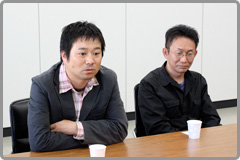
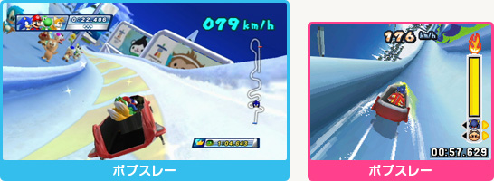
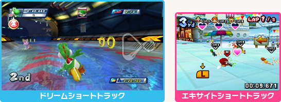

――
Wii版とDS版のスタッフの間で、お互い意識されたところはあったんでしょうか？

笠原：
今回は最初からまったく別のゲームになるというコンセプトだったので、Wii版のアルペンがこうだから、DS版はこうしようというような意識はせずに、それぞれのチームで作っていたと思います。ただ、DS版で作っていない競技を先にWii版で任天堂さんにチェックしていただいていたら、そのご意見は反映させようというのはありました。
野中：
われわれとしてはそこを利用といいますか、DS版のボブスレーの重量感をWii版でも出してもらえないでしょうかという風に、お互いを意識させる、煽るような部分もあったかも知れません（笑）。

笠原：
スケジュール的な部分で、任天堂さんからOKをもらっている競技の数とかはすごく気にしてました。Wii版に出遅れたらプロデューサーに怒られるぞと。なので、進行状況に関しては常にWii版と同じか、少し先行するような感じで意識して進めていました。
大橋：
口には出さないけど、お互い意識していたとは思いますよ。
飯塚：
DS版が２週間くらい先行して上げてくるので、Wii版は追う立場で、これ以上離されないようにとは意識していましたね。
佐藤浩：
操作方法やゲームのルールで、どちらかが先にやってしまって採用できなくなったということもあったんじゃないですか？
進藤：
たまにWii版の企画書は見ていましたね。パクるのではなく、かぶらないようにですが。
大橋：
でも「パクりやがった！」って言ってた時もあったよね（一同・笑）。やっぱり同じ競技だと似たアイデアが出てくるものなので、本当にパクったかどうかはわからないよって話はありましたね。
福井：
私は仕事上は結構双方の動きに左右されまして（笑）。競技は同じでも操作内容が変わったりするとモーションの数も変わったりするので。すると先出しジャンケンでWii版でここまで作っているから、DS版はそれを使ってなんとかしてくれということもあったり。
野中：
すると今度は「Wii版を優先しやがって」みたいな（笑）。
大橋：
もっとモーション作れないのかと、今度は私の方に話が来て（笑）。
野中：
どちらかのチームに「今夜何か食べに行こうよ」とか誘われたりしませんでしたか？
――
お話を聞いているとお互い相当意識されている気もしますが（笑）。その関係がゲームの方にうまく反映されたことなんかは？
進藤：
同じ種類のドリーム競技で、Wii版がアイテムを使ったものにしていたら、DS版ではまずアイテムを使わないというところからはじめて、結果的に良いアイデアが出てきたことがありました。そういう意味では、お互い別のものを考えようというところで、新しいものを思い付く原動力にはなったんじゃないかなと思います。

笠原：
Wii側で褒められた競技があった場合、逆にわれわれが叩かれてるぞと（笑）。コッソリ夜中にプレイさせてもらって確かに面白いと。これは取り入れなきゃいかんかも、みたいな話もしていましたね。もちろん、トータルでWii版もDS版も売れてくれないと困りますので、助け合うところもありましたよ。同じ競技でも遊び方はまったく違いますし、両方とも買っていただいてもそれぞれ十分に楽しめると思います。
野中：
（廣瀬に向かって）カーリングはWii版とDS版では？
廣瀬：
プレイする感覚がそれぞれまったく違うんですが、両方とも楽しいですよ。
佐藤浩：
その前振りだったら、どっちかが面白いと言ってくれた方が面白いんだけど（一同・笑）。